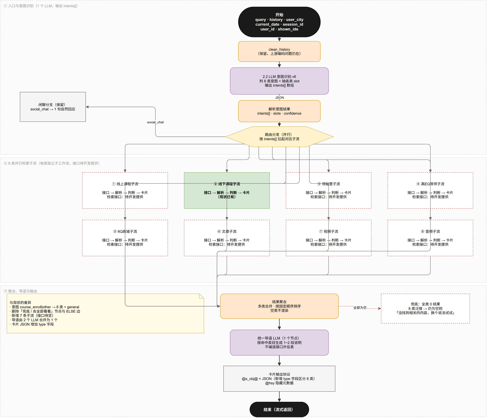
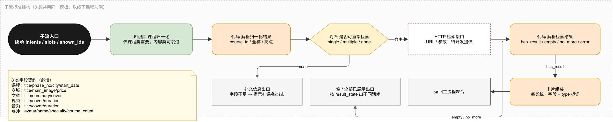
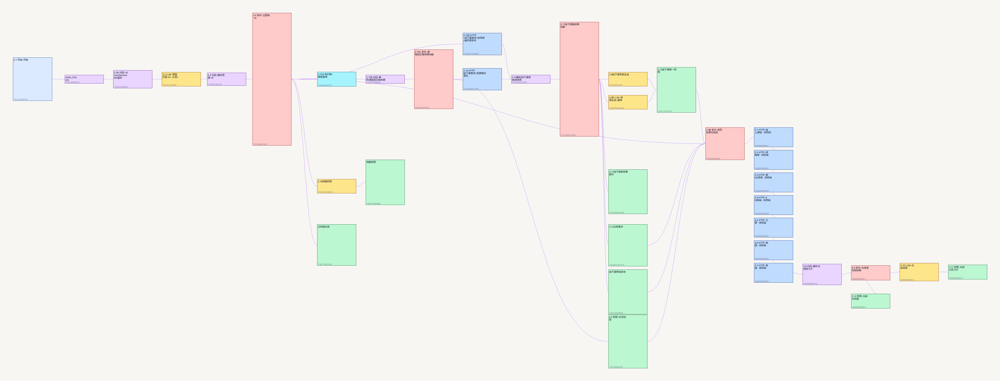

意图识别输出 intents[] → 并行拉起 8 类子流 → 聚合 → 统一导语 → 卡片输出。删除全部「去全部看看」降级链路。
| 维度 | v5 现状 | v6 目标 |
|---|---|---|
| 检索数据类型 | 1 类（线下课程期数） | 8 类 + 泛搜兜底 |
| 意图枚举 | course_enroll / other | 8 类 + general，输出数组 |
| 未命中处理 | 「小Q暂不支持」+「去全部看看」跳转 | 删除；改泛搜兜底，仍空才说「没找到」 |
| 结果编排 | 只有期数卡 | 按命中类目出分区，固定顺序，空类不渲染 |
| 导语节点 | 2 个 LLM（2.9 / 2.9B）靠分支互斥 | 合并为 1 个，按类目分口径 |
| 画布结构 | 平铺 23 节点 | 主流程 + 8 个子工作流 |
| 数据源 | 单一期数接口 | 8 类全部走接口，知识库仅做课程名归一 |
intent 只允许两值的约束，以及「其余输出 other」的表述@s_obj@按钮:去全部看看@e_obj@open_all_search 跳转动作验收时全局搜索「暂不支持」「去全部看看」，命中数必须为 0。

| 节点 | 类型 | 职责 | 对应现状 |
|---|---|---|---|
| V1 开始 | start | 接收 query / history / user_city / current_date / session_id / user_id / shown_ids | 2.1 |
| V2 clean_history | code | 编码修复，原样保留 | clean_history |
| V3 意图识别 | llm | 8 类分类 + 各类 slot 抽取，输出 intents[] | 2.2（重写） |
| V4 解析 | code | 去 Markdown 包裹、解析数组与嵌套对象 | 2.3（改造） |
| V5 路由 | if-else | 按 intents 拉起子流 | 2.4（扩到 10 个出口） |
| V6.1–V6.8 子流 | 子工作流 | 各类检索、解析、卡片组装 | 2.15A–2.17（1 类复用，7 类新建） |
| V7 聚合 | code | 多类合并、固定排序、空类剔除 | 新增 |
| V8 导语 | llm | 1~2 句说明，按类目分口径 | 2.9 + 2.9B（合并） |
| V9 卡片输出 | answer | @s_obj@ 带 type | 2.13（协议扩展） |
| V10 兜底 | answer | 泛搜仍为空时的提示 | 兜底节点（重写） |
| V11 闲聊 | llm + answer | social_chat 分支 | 2.18 + 闲聊回复 |
| 项 | v5 现状 | v6 建议 | 理由 |
|---|---|---|---|
| 模型 | qwen3.6-flash-2026-04-16 | 不变 | 够用且便宜 |
| temperature | 0.8 | 0.1 | 分类任务用 0.8 会抖；意图从 2 值扩到 9 值后，抖动代价更高 |
| 输出结构 | 单值 intent | 数组 intents[] | 一句可命中多类，是 v6 的核心变化 |
| 字段组织 | 扁平 slots | 按类目分组 slots.<category> | 9 类字段平铺会互相污染 |
{
"intents": ["article", "video", "audio"],
"keyword": "恋爱咨询",
"social_chat": false,
"ready": true,
"confidence": 0.86,
"slots": {
"offline_course": {
"course_name": "", "city": "", "instructor_name": "",
"phase_no": "", "date_from": "", "date_to": "", "location_mode": "none"
},
"online_course": { "course_name": "", "topic": "" },
"leader_camp": { "camp_name": "", "city": "", "season": "" },
"mentor": { "mentor_name": "", "specialty": "" },
"mall_goods": { "goods_name": "", "goods_type": "", "price_range": "" },
"article": { "topic": "", "author": "" },
"video": { "topic": "", "duration_range": "" },
"audio": { "topic": "", "album": "" }
},
"missing": [],
"is_follow_up": false
}
几点约定：
"" / []，不输出 null。general 混用——闲聊不该触发 8 类并行检索。v5 Prompt 里这几块逻辑是打磨过的，v6 直接沿用，只把「意图判定」部分换掉：
完整 Prompt 见 docs/spec-v6.md §5.1，可直接复制进 Dify。
| CASE | 条件 | 去向 |
|---|---|---|
| C0 | social_chat = true | V11 闲聊 |
| C1 | intents 包含 online_course | V6.1 线上课程 |
| C2 | intents 包含 offline_course | V6.2 线下课程 |
| C3 | intents 包含 leader_camp | V6.3 领袖营 |
| C4 | intents 包含 mentor | V6.4 导师 |
| C5 | intents 包含 mall_goods | V6.5 商城 |
| C6 | intents 包含 article | V6.6 文章 |
| C7 | intents 包含 video | V6.7 视频 |
| C8 | intents 包含 audio | V6.8 音频 |
| ELSE | 以上都不命中，或 ready = false | V10 兜底 |
若当前 Dify 版本支持并行执行，直接用并行分支，C1–C8 同时跑，最后汇合到 V7。
耗时 = 最慢那类接口的耗时，与命中类目数无关。
if-else 是单出口，若不支持并行，则做成「条件节点串联」：
C1 命中 → 跑子流1 → 进 C2 条件节点 C1 未命中 → 直接进 C2 条件节点 …依次到 C8 → 汇合到 V7
耗时 = Σ 各类接口耗时。命中 3 类、单接口 800ms 时，首屏约 2.4s，偏慢。
缓解手段：接口加 1.5s 超时，超时当作该类无结果，不阻塞其他类目。
决策建议：先用串行扇出把流程跑通，接口齐了并且并行能力确认后再切并行。不要一开始就卡在「Dify 支不支持并行」上。
| 项 | 建议值 | 说明 |
|---|---|---|
| 单类接口超时 | 1500 ms | 超时视为该类 0 条，静默不渲染 |
| 整体首屏预算 | ≤ 2500 ms | 超过则先出已有分区，剩余类目流式补 |
| 重试 | 不重试 | 搜索场景重试会拉长等待，宁可少一类 |
| 降级粒度 | 按类目 | 一类失败不影响其他类，这是子流隔离的核心价值 |

每类子流内部结构一致，差异只在接口和卡片字段：
子流入口 → 归一化（仅课程类需要知识库/词典） → 检索（系统 HTTP 接口） → 解析（code 节点，统一产出 result_state） → 卡片组装（强制带 type 与 url） → 返回 V7 聚合 ↘ 字段不足 → 补充信息出口 ↘ 0 条 / 已全部展示 → 空态出口
| 状态 | 含义 | 下游表现 |
|---|---|---|
has_result | 有结果 | 组装卡片，进聚合 |
empty | 接口正常但无数据 | 该类不渲染 |
no_more | 翻页场景已无更多 | 出「没有更多了」提示 |
error | 接口失败或超时 | 该类不渲染，记录日志 |
need_more | 字段不足 | 出补充信息提示 |
这个约定沿用现状 2.16 节点，不新造概念，减少联调成本。
结论：8 类数据全部来自后端接口，不再用知识库承载内容。知识库只保留一处——课程名归一化（沿用现网 2.15A），它决定「用户说的课名对应哪个 courseId」，不产出任何卡片内容。

| 维度 | 知识库 | 系统接口 |
|---|---|---|
| 数据新鲜度 | 靠同步任务，天级滞后 | 实时 |
| 内容下架 | 要主动删文档，否则出死链 | 接口不返回就自然消失 |
| 用户可见性 | 做不了按用户过滤 | 可带 userId 过滤 |
| 分页与总数 | top_k 封顶，做不了「共 128 条」 | 原生支持 |
| 价格 / 库存 | 禁止使用 | 可实时返回 |
| 新增类目 | 建数据集、同步、调权重 | 加一个接口节点 |
| 节点 | 类目 | 出参必须包含 |
|---|---|---|
| 3.1 HTTP-线上课程 | online_course | id、title、cover、price |
| 3.2 HTTP-领袖营 | leader_camp | id、title、cover、campType、startDate |
| 3.3 HTTP-高EQ导师 | mentor | id、name、avatar、specialty |
| 3.4 HTTP-6Q商城 | mall_goods | id、title、mainImage、price |
| 3.5 HTTP-文章 | article | id、title、cover、summary、url |
| 3.6 HTTP-视频 | video | id、title、cover、duration、url |
| 3.7 HTTP-音频 | audio | id、title、cover、duration、url |
入参统一为 userId、sessionId、keyword、city、page、size。地址与鉴权在 DSL 里用 FILL-ME.example.com 占位，回填步骤见 dsl/README.md 第二节。
线下课程不在其中：它沿用现网期数接口 goods/api/product/periods/ai/list，走 2.15 / 2.15D 那条链，本次不动。
id 与 title，否则不出卡（无标题的卡片比没有卡片更糟）data / result / list / records / rows / items 里找第一层数组ALIAS 表做别名映射，如 title ← name / goodsName / campNameurl 可空，前端按 type + id 自行拼详情路由3.8 输出 debug_text，形如 文章 2/2、视频 0/1（出卡数 / 接口原始条数），联调时先看这个字段定位问题。
本次方案只出需求与原型，接口一律留空，由开发确认后填补。画布里先用占位节点 + 返回模拟数据的 code 节点跑通流程，接口到位后只替换节点，不改动路由与聚合逻辑。
| 类目 | 建议通道 | 接口状态 | 备注 |
|---|---|---|---|
| 线下课程 | A · HTTP | 已有 | goods/api/product/periods/ai/list |
| 线上课程 | HTTP 接口 | 待填补 | 3.1 节点占位 |
| 领袖营 | A · HTTP | 待填补 | 名额需实时 |
| 高EQ导师 | HTTP 接口 | 待填补 | 3.3 节点占位，需先确认导师实体 |
| 6Q商城 | HTTP 接口 | 待填补 | 3.4 节点占位，价格库存实时 |
| 文章 | HTTP 接口 | 待填补 | 3.5 节点占位 |
| 视频 | HTTP 接口 | 待填补 | 3.6 节点占位 |
| 音频 | HTTP 接口 | 待填补 | 3.7 节点占位 |
复制下面这份模板，逐类填写。缺任何一项都无法联调：
【接口待开发填补 · 类目：______】
1. 通道 HTTP 接口（内容类统一走接口）
2. URL ________________________________
3. Method GET / POST
4. 鉴权 无 / Header Token / 其他：________
5. 入参 字段名 + 类型 + 是否必填
keyword string 必填
________ ______ ____
6. 出参 字段名 + 类型（需与卡片字段一一对应）
id string
title string
________ ______
7. 错误码 成功 / 无数据 / 参数错 / 服务错 的 code 与 msg
8. 超时与限流 超时 _____ ms，限流 _____ QPS
9. 分页 page/size 还是 cursor
10. 排序与去重 默认排序规则：____________
11. 备注 权限过滤、灰度、特殊字段说明
| 类目 | 卡片必需字段 | 卡片可选字段 |
|---|---|---|
| 线上课程 | id · title · cover · type · price | learnedCount · teacher |
| 线下课程 | id · title · phaseNo · city · startDate | instructor · seatsLeft |
| 领袖营 | id · title · cover · campType · startDate | city · ageRange · seatsLeft · price |
| 高EQ导师 | id · avatar · name · specialty | title · courseCount · intro |
| 6Q商城 | id · title · mainImage · price | originPrice · sales · goodsType |
| 文章 | id · title · cover · summary · url | author · publishTime · readCount |
| 视频 | id · title · cover · duration · url | playCount · isTrial |
| 音频 | id · title · cover · duration · url | playCount · album |
接口出参字段名可与上表不同，但必须在解析 code 节点里映射到上表字段名，否则后端一改名就要动 8 个卡片组件。
{
"sections": [
{ "type": "article", "total": 3, "items": [ … ] },
{ "type": "video", "total": 1, "items": [ … ] },
{ "type": "audio", "total": 2, "items": [ … ] }
],
"section_counts": "文章 3、视频 1、音频 2",
"hit_categories": ["article", "video", "audio"],
"all_empty": false
}
现状 2.9 与 2.9B 两个 LLM 节点、在 2.13 靠分支互斥隐式合并——这是隐患，v6 合并为一个节点，按 hit_categories 分口径出文案。
| 命中情况 | 口径示例 |
|---|---|
| 单类 · 线下课程 | 为您查询{时间段}内{导师}在{城市}的{课程名}课程，以下是符合要求的信息和报读期数： |
| 单类 · 文章 | 为你整理了几篇和「{keyword}」相关的文章： |
| 单类 · 导师 | 为你找到以下擅长{specialty}的导师： |
| 多类 | 关于「{keyword}」，我找到了相关文章、视频和音频这几类内容： |
| 续聊 | 已继续为你补充筛选更多结果，以下是补充内容： |
硬约束：不编造接口外信息、不提未被问到的价格名额、不复述字段名、结尾不得出现「去全部看看」、长度 1~2 句。
| 标记 | 用途 | v6 变化 |
|---|---|---|
@s_obj@ … @e_obj@ | 卡片数据 JSON | 每块增加 type，多类时按顺序拼多个块 |
@hsy … @_hsy | 隐藏元数据（课名/城市/时间等） | 不变 |
@s_obj@按钮:去全部看看@e_obj@ | 跳转按钮 | 删除 |
@s_obj@{"type":"article","total":3,"items":[{…}]}
{"type":"video","total":1,"items":[{…}]}@e_obj@
APP 侧必须改：现在按「只有一个数组」解析，v6 要按 type 分派到对应卡片组件，且要能处理多个块。
| 场景 | 判定 | 输出 |
|---|---|---|
| 意图不明 / 泛词 | intents = ["general"] | 8 类并行泛搜，有结果就按类目出分区 |
| 泛搜后仍 0 条 | 全部子流 empty | 没找到相关的内容，换个说法试试 |
| 接口整体异常 | 全部 error | 当前检索服务有点异常，请稍后再试试哦 |
| 字段不足 | ready = false 且非闲聊 | 我还需要一点信息才能继续帮你查，你可以告诉我课程名称、导师姓名或更具体的关键词 |
| 闲聊 | social_chat = true | 1 句自然回应，不引导搜索、不罗列内容 |
语义变了：以前是「这类不支持」，现在是「这个词没搜到」。两句话不能混用。
| 阶段 | 内容 | 不依赖接口 |
|---|---|---|
| ① 意图层 | V3 改 Prompt + V4 解析 + V5 路由，用固定 JSON 验证分流是否正确 | ✅ 可先行 |
| ② 单类闭环 | 线下课程子流迁移，确认改造后行为与现状一致 | ✅ 可先行 |
| ③ 内容链骨架 | 3.1~3.7 占位 + 3.8 组装 + 3.9 判断 + 导语/回复，用样例报文先跑通 | ✅ 可先行（喂 mock） |
| ④ 接口接入 | 线上课程 / 领袖营 / 导师 / 商城 / 文章 / 视频 / 音频，逐个回填 URL 与鉴权 | ❌ 等接口 |
| ⑤ 多类聚合 | V7 聚合 + V8 导语 + V9 多块卡片 | ⚠️ 需 ≥2 类可用 |
| ⑥ 全量回归 | 10 条验收用例 + 降级话术清零 | ❌ 全部到位后 |
①②可立即开始；③可以先用 3.8 的单测脚本（scripts/check-node38.py）验证组装逻辑，不必等接口。
| # | 用例 | 期望 |
|---|---|---|
| 1 | 智慧父母一阶 | 只出线下课程分区，期数卡与现状一致（回归） |
| 2 | 恋爱咨询 | 文章 / 视频 / 音频三分区并列，顺序正确 |
| 3 | 6Q潮玩盲盒 | 出商城分区；不出现任何「暂不支持」 |
| 4 | 有哪些老师擅长情绪管理 | 出导师卡，不是期数卡 |
| 5 | 夏令营 | 出领袖营分区 |
| 6 | 随便说说 | 只出「没找到相关的内容，换个说法试试」 |
| 7 | 某类接口超时 | 其他类正常出卡，失败类静默不渲染 |
| 8 | 那视频呢（续聊） | 追加视频分区，上文与已有卡片不清空 |
| 9 | 卡片协议 | 每个块带 type，APP 正确分派渲染 |
| 10 | 全局文案 | 「去全部看看 / 暂不支持」命中数为 0 |
| # | 事项 | 影响 | 建议 |
|---|---|---|---|
| 1 | 7 类接口是否已存在 | 无接口则整版跑不通 | 开发按 §7.2 模板逐类填补 |
| 2 | 已定：7 类内容全部走系统接口 | 接口回填前内容分支报错，属预期 | |
| 3 | 已不涉及，内容类不再用数据集 | — | |
| 4 | Dify 是否支持并行分支 | 决定首屏耗时是 1× 还是 N× | 先串行跑通，并行后补 |
| 5 | 导师是否有实体数据 | 没有就做不了导师卡 | 无实体则第 4 类降级为线下课程筛选项 |
| 6 | 已不涉及，知识库仅保留课程名归一化 | — | |
| 7 | 每类条数与「更多」形态 | 影响接口分页参数 | 单类 5 条、多类 3 条，更多为同页展开 |
| 8 | 传统类目 Tab 是否保留 | 收敛到 AI 后 Tab 的意义 | 保留一期过渡，下版再议 |
config/intent-slots-v6.jsondocs/diagrams/*.drawioAPP 侧需实现：8 类卡片组件、分区渲染、@s_obj@ 按 type 分派、删除 open_all_search 跳转。